Authors: Marthinus van Niekerk, Muhammad Tariq, Oleksandr Dolynchuk
Type: experiment · Category: statistical mechanics · PDF: https://arxiv.org/pdf/2609.07973v1
Analysis basis: full PDF text, analyzed in chunks
Topic relevance: driven-dissipative phase transition 1/5 · non-equilibrium universality 1/5
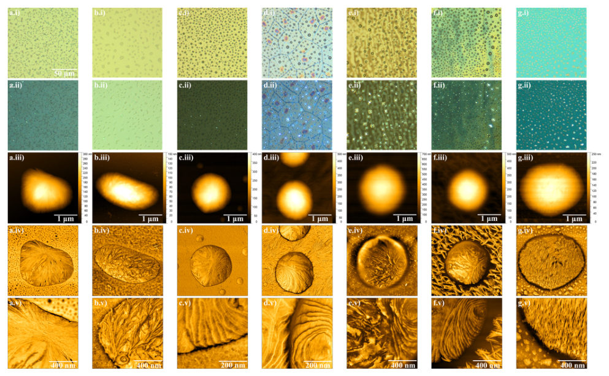
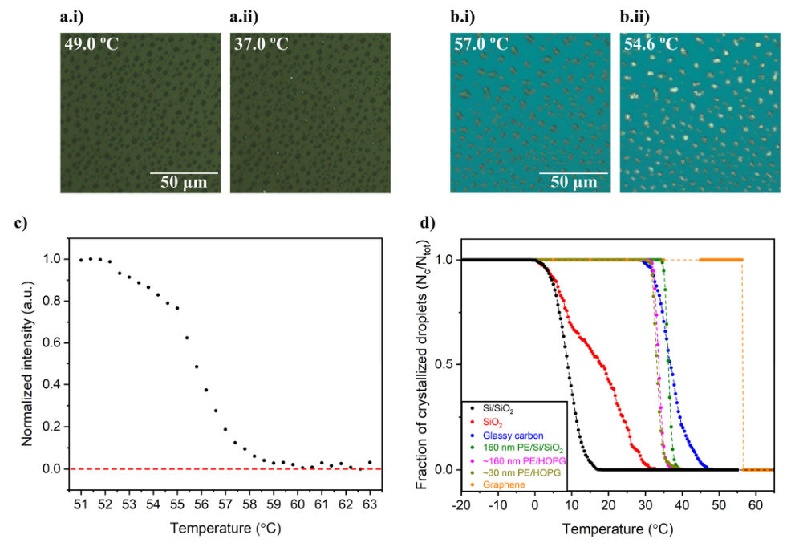
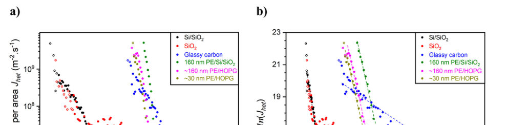
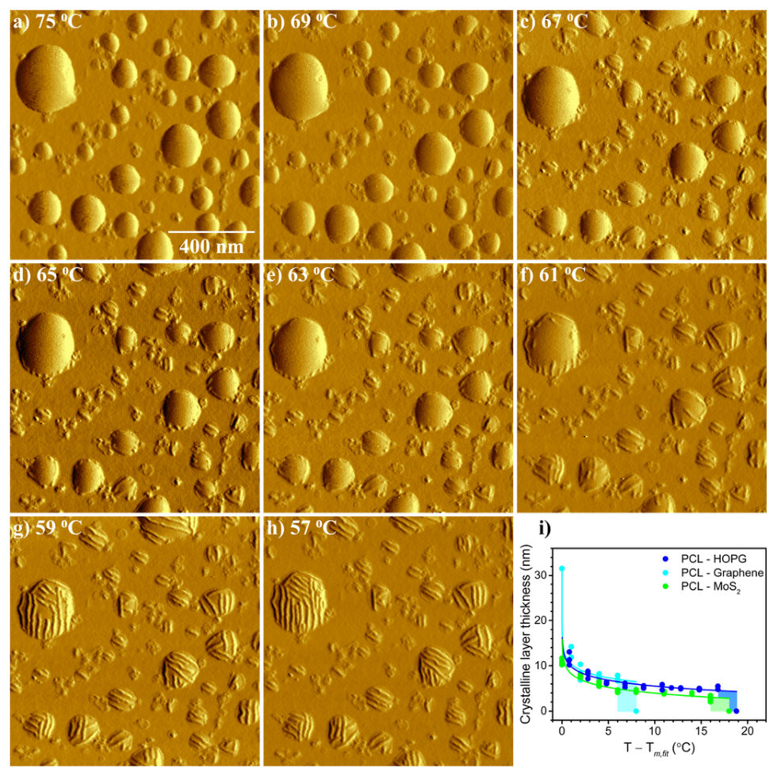
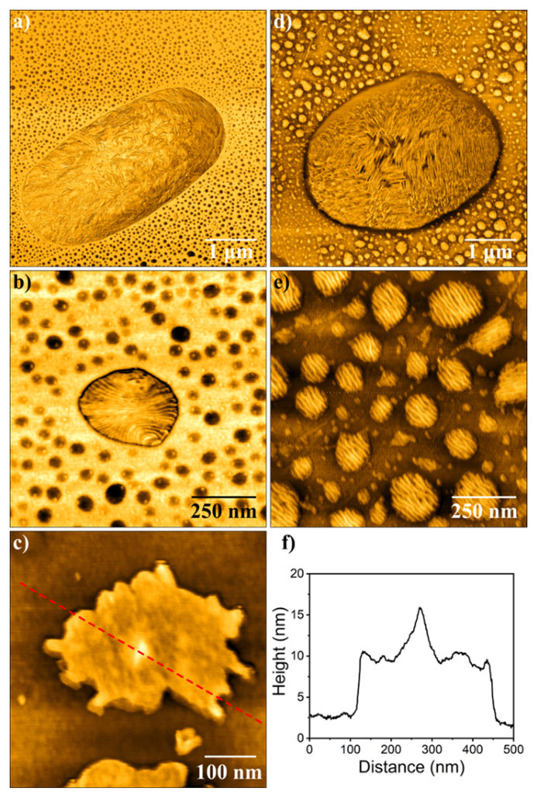
Summary. This work investigates how crystallization in polymers is initiated on different surfaces by comparing prefreezing and heterogeneous nucleation mechanisms. By studying PCL on various substrates, the authors demonstrate that prefreezing provides a superior pathway for controlling crystal growth kinetics and achieving highly oriented crystal structures. This has significant implications for materials science applications requiring controlled polymer morphology.
Why it may be interesting. While focused on polymer physics, the detailed analysis of phase transitions, nucleation kinetics, and the comparison between equilibrium and non-equilibrium pathways touches upon fundamental concepts in non-equilibrium statistical mechanics.
Main problem. The study aims to systematically compare the influence of prefreezing versus heterogeneous nucleation on the kinetics and resulting morphology of substrate-induced crystallization in polymers.
Main result. Prefreezing was shown to have a superior influence on crystallization kinetics and crystal morphology compared to heterogeneous nucleation, suggesting prefreezing substrates are excellent nucleating agents.
Method. The researchers used polarized light optical microscopy (PLOM) and quantitative analysis of temperature-dependent nucleation rates, comparing crystallization behavior on various crystalline and amorphous substrates.
Model / system. The physical system involves the crystallization of the model polymer poly(epsilon-caprolactone) (PCL) within dewetted droplets deposited on diverse substrates, including graphene, glass, and silicon.
Key observables. Crystallization temperature (Tc), nucleation rate per area, and in- and out-of-plane crystal orientation.
Important parameters / regimes. Interfacial energies ($\gamma$), supercooling ($\Delta T$), and the comparison between equilibrium (prefreezing) and non-equilibrium (heterogeneous) processes.
Assumptions / limitations. The analysis relies on comparing kinetic models (like Classical Nucleation Theory) across different physical regimes (prefreezing vs. heterogeneous nucleation).
Figures summary. Figures show PLOM images monitoring crystallization, and data plots analyze the temperature dependence of the nucleation rate, revealing distinct kinetic regimes for different substrates.
Paper structure. The paper systematically compares three crystallization scenarios (homogeneous, heterogeneous, prefreezing) across various substrates, analyzing kinetics via nucleation rate fits and morphology via microscopy and scattering techniques.
Crystallisation of liquids often occurs at solid surfaces, via heterogeneous nucleation or prefreezing. Understanding this process is crucial for controlling crystal morphology in thin films and developing efficient nucleating agents - especially for polymers, typically processed in a molten state. However, the efficiency of nucleation and prefreezing with respect to crystallisation kinetics and semicrystalline polymer morphology has not been well studied and remains unclear. Here, we address this challenge by conducting a systematic study of substrate-induced crystallisation in dewetted droplets of the model polymer poly($\varepsilon$-caprolactone) (PCL) on various crystalline and amorphous substrates. Using polarized light optical microscopy, droplet crystallisation temperature was monitored and varied across the substrates, revealing three scenarios: close-to-homogeneous nucleation on glass and silicon; heterogeneous nucleation on ordered and disordered carbon-rich substrates; and prefreezing on graphene. The temperature-dependent nucleation rate was analysed and found to obey classical nucleation theory for all systems except PCL on graphene, where it diverges as all the droplets crystallise simultaneously. The highest in- and out-of-plane PCL crystal orientation is found on graphene, where the epitaxially grown lamellae extend vertically over several hundred nanometres. These results demonstrate that prefreezing has a superior influence on crystallisation kinetics and crystal morphology, making prefreezing substrates perfect nucleating agents.
Authors: Yongho Park, Jeonghun Sohn, Sejoong Kim, Kyoung-Whan Kim
Type: theory · Category: other · PDF: https://arxiv.org/pdf/2609.08100v1
Analysis basis: full PDF text, analyzed in chunks
Topic relevance: Keldysh / 2PI / non-Gaussian methods 1/5
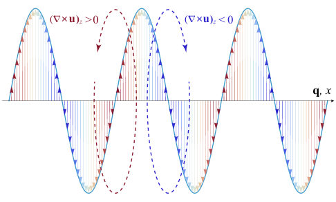
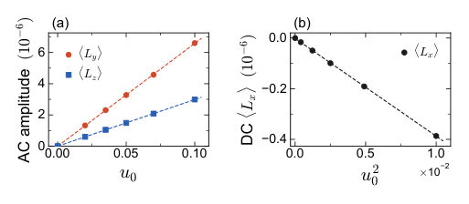
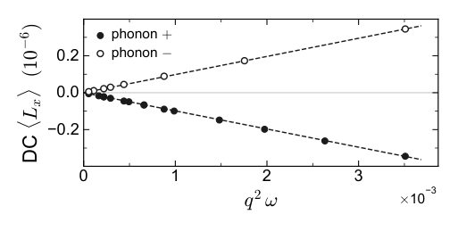
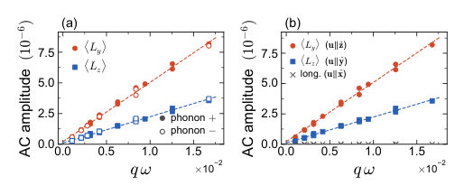
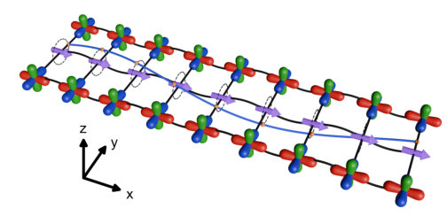
Summary. This theoretical work demonstrates that electronic Orbital Angular Momentum can be generated by phonons even if those phonons lack inherent chirality or axial symmetry. By developing a gauge-field theory, the authors show that the OAM response is controlled by the phonon's wave vector and frequency, opening up a broad, tunable mechanism for orbitronics applications.
Why it may be interesting. This work provides a general, wave-vector-tunable route to generating orbital currents and OAM in condensed matter systems using acoustic phonons, which is highly relevant for designing novel orbitronics devices.
Main problem. The paper investigates the generation of electronic Orbital Angular Momentum (OAM) induced by finite-momentum phonons, aiming to extend the understanding beyond mechanisms requiring chiral or axial phonon modes.
Main result. OAM can be generated by finite-momentum phonons even without phonon axiality or chirality, with the response being tunable by both the phonon wave vector (q) and frequency (ω). The generation mechanism is governed by the matching between phonon geometry and electronic orbital texture, not solely by phonon angular momentum.
Method. The authors develop a general gauge-field theory using a unitary transformation to absorb phonon displacements into emergent vector and scalar potentials, allowing for a perturbative classification of the OAM response.
Model / system. The study models electrons in a deformable lattice subjected to phonon displacement fields, analyzed using a local Bloch description and extended to quasi-two-dimensional tight-binding simulations.
Key observables. Electronic Orbital Angular Momentum (OAM), AC and DC orbital polarization, and the connection to the electronic Berry curvature.
Important parameters / regimes. Phonon wave vector (q), phonon frequency (ω), and the phonon polarization (e.g., linear vs. circular).
Assumptions / limitations. The analysis relies on the small displacement approximation and the long-wavelength limit for the phonon field.
Figures summary. Figures illustrate the scaling laws for AC OAM (linear in qω) and the DC component (quadratic in qω) for various phonon polarizations, confirming the theoretical predictions.
Paper structure. The paper establishes the theoretical framework using gauge potentials, derives scaling laws for AC and DC responses, and confirms the predictions using both analytical derivations and time-dependent tight-binding simulations.
We show that finite-momentum phonons generate electronic orbital angular momentum (OAM) even without phonon axiality or chirality, with the response controlled by the phonon wave vector $q$ and frequency $ω$. We develop a general gauge-field theory in which a unitary transformation absorbs the phonon displacement into emergent vector and scalar potentials acting on the electrons, providing a perturbative classification of the OAM response in $q$ and $ω$. We derive $q$- and $ω$-scaling laws for AC and DC responses. Notably, AC OAM arises even for linearly polarized phonons, with its magnitude and sign tunable by $q$. Its generation is governed by the matching between the phonon geometry and the electronic orbital texture rather than solely by the phonon angular momentum. The connection of the DC response to the electronic Berry curvature further supports that phonon angular momentum is not the only degree of freedom governing electronic OAM generation. Time-dependent tight-binding simulations under acoustic-phonon driving independently confirm the core predictions. Our results extend phonon-driven OAM beyond chiral and axial phonons and establish a wave-vector-tunable route to orbitronics, accessible with surface acoustic waves.
Authors: Bhawana Mehra, Bibek Ranjan Satapathy, V S Abhishek, Reena, Ritu Gupta, Yogesh Singh, S. Chakraverty, Amit Vashist
Type: experiment · Category: other · PDF: https://arxiv.org/pdf/2609.08675v1
Analysis basis: full PDF text, analyzed in chunks
Topic relevance: Keldysh / 2PI / non-Gaussian methods 1/5
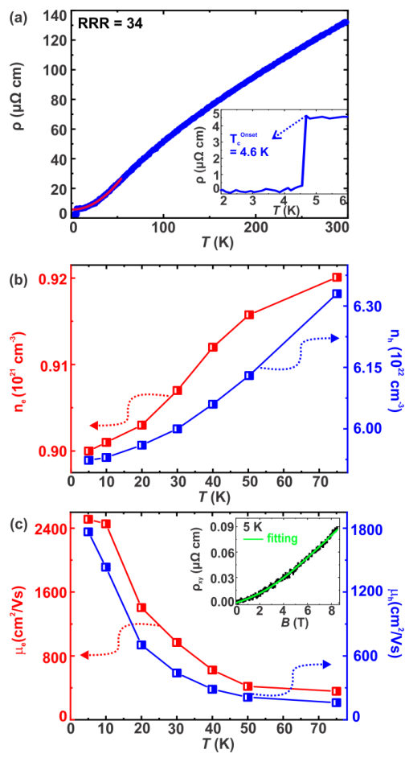
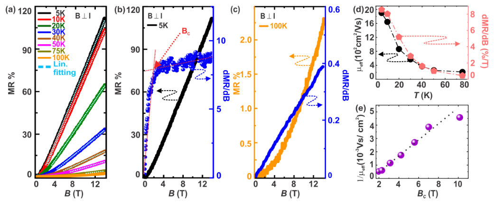
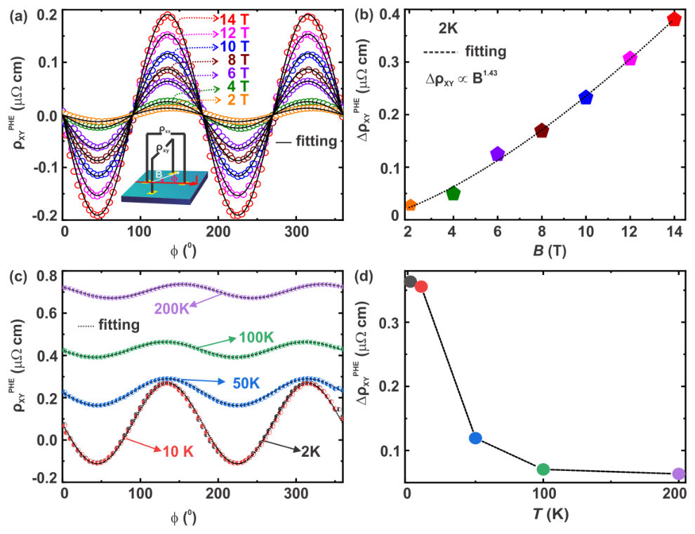
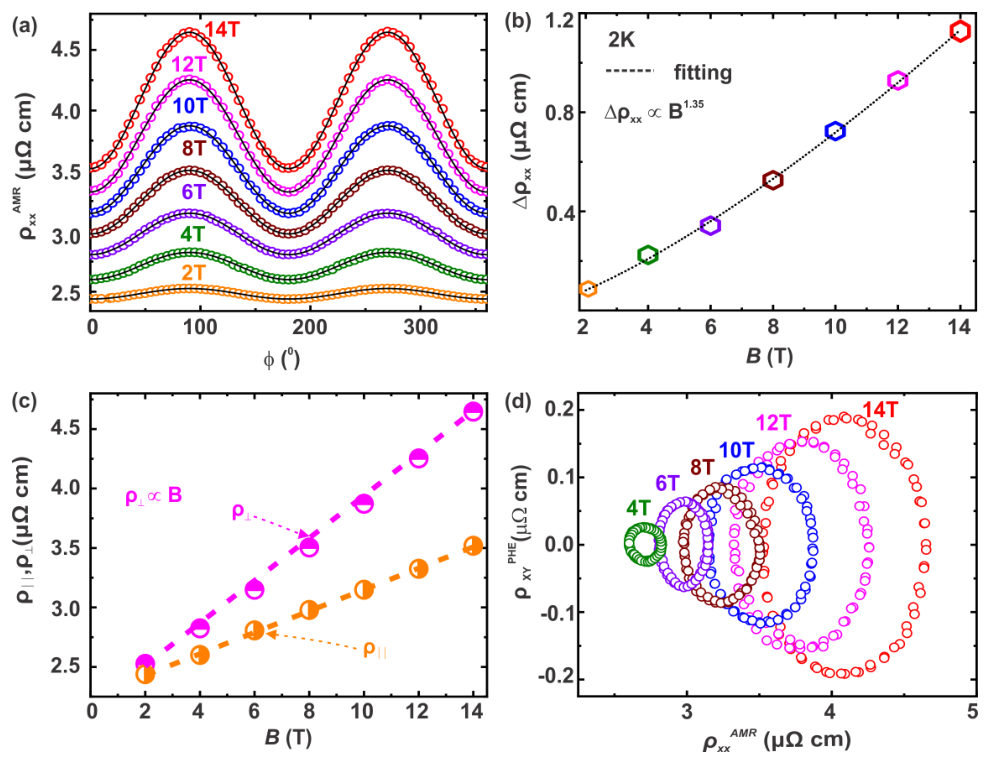
Summary. This work reports the first observation of linear magnetoresistance and the planar Hall effect in the Dirac semimetal PdTe. By analyzing the field and angle dependence of these effects, the authors conclude that both phenomena are best explained by conventional semiclassical transport mechanisms, specifically anisotropic orbital magnetoresistance, rather than exotic topological effects like the chiral anomaly.
Why it may be interesting. While the paper focuses on condensed matter transport, the rigorous distinction between topological predictions (like the chiral anomaly) and classical semiclassical transport mechanisms is a key theme in modern topological physics, which can inform the understanding of quantum phenomena in engineered systems.
Main problem. The study aims to investigate the magnetotransport phenomena, specifically linear magnetoresistance (LMR) and the planar Hall effect (PHE), in the Dirac semimetal PdTe, while distinguishing between topological and conventional classical transport mechanisms.
Main result. The observed LMR and PHE in PdTe can be understood within a semiclassical transport framework, suggesting that the effects originate predominantly from anisotropic orbital magnetoresistance rather than the chiral anomaly.
Method. Magnetotransport measurements were performed on high-quality single crystals of PdTe, measuring resistivity ($ ho$) as a function of magnetic field ($B$) and angle ($\phi$), and fitting the data using semiclassical Boltzmann expressions.
Model / system. The physical system is a type-I Dirac semimetal, PdTe, which also exhibits superconductivity. Measurements involve analyzing the Hall resistivity ($ ho_{xy}$), magnetoresistance (MR), and the angular dependence of resistivity ($ ho_{PHE}^{xy}$ and $ ho_{AMR}^{xx}$).
Key observables. Linear magnetoresistance (LMR), Planar Hall Effect (PHE), Anisotropic Magnetoresistance (AMR), and the crossover of MR from quadratic to linear dependence at a critical field ($B_c$).
Important parameters / regimes. Temperature ($T$), Magnetic Field ($B$), Carrier densities ($n_e, n_h$), and Mobilities ($\mu_e, \mu_h$).
Assumptions / limitations. The analysis assumes that the PHE can be modeled by a semiclassical Boltzmann expression, and that the LMR crossover is governed by disorder-driven mobility fluctuations rather than quantum limit effects.
Figures summary. Figures show $ ho(T)$ and carrier parameters, the crossover of MR from quadratic to linear dependence with $B$, and angular/field dependence plots for PHE and AMR, including parametric plots.
Paper structure. The paper first establishes the material properties (superconductivity, carrier concentrations) and then systematically analyzes the MR, showing a crossover to linearity. Subsequently, it analyzes the PHE and AMR, using angular dependence and parametric plots to rule out the chiral anomaly in favor of anisotropic orbital magnetoresistance.
PdTe is a Dirac semimetal that also exhibits superconductivity, providing an intriguing platform to explore topological superconductivity and unconventional magnetotransport phenomena. While the superconducting properties of PdTe have been extensively studied in recent years, the detailed magnetotransport phenomena have remained unexplored. Here, we present the first observation of linear magnetoresistance (LMR) and the planar Hall effect (PHE) in a high-quality single crystal of PdTe. We observe temperature-dependent unsaturated LMR in both in-plane ($B \parallel I$) and out-of-plane ($B \perp I$) configurations. The magnetoresistance (MR) shows a crossover from parabolic to linear dependence at the critical field Bc, and detailed analysis indicates that disorder-driven mobility fluctuations are the origin rather than the Abrikosov quantum-limit mechanism. Furthermore, prominent PHE has been observed by rotating the magnetic field within the plane of the sample. The detailed analysis of the field and temperature dependence of PHE-amplitude, along with the parametric plot, suggests that PHE originates predominantly from the anisotropic orbital magnetoresistance rather than the chiral anomaly. Our results demonstrate that although the Dirac point is close to the Fermi level, the observed LMR and PHE in the Dirac semimetal PdTe can be understood within a semiclassical transport framework, highlighting the importance of distinguishing between topological and conventional classical transport mechanisms in topological materials
Authors: Alapan Bera, Soumik Mukhopadhyay
Type: experiment · Category: other · PDF: https://arxiv.org/pdf/2609.09097v1
Analysis basis: full PDF text, analyzed in chunks
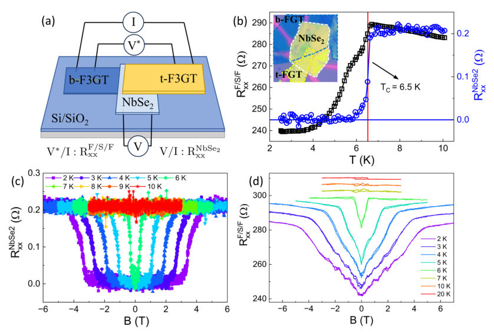
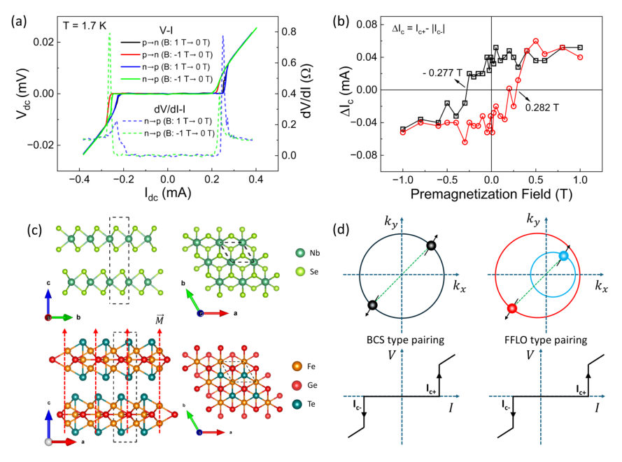
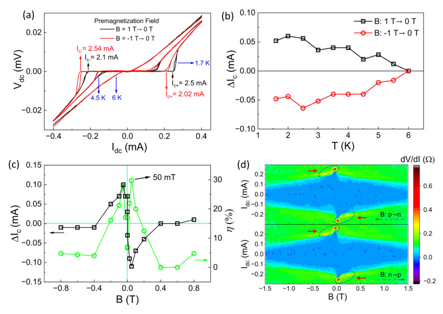
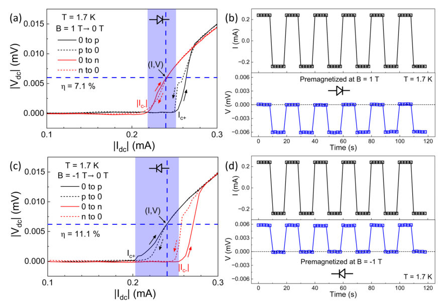
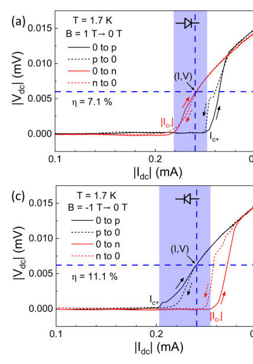
Summary. This paper reports the creation of a junction-free superconducting diode using a van der Waals heterostructure ($ ext{Fe}_3 ext{GeTe}_2/ ext{NbSe}_2$). By leveraging magnetic proximity effects, they achieve a highly efficient, polarity-tunable superconducting diode. This device is then successfully utilized to implement a two-input XNOR logic gate, marking a significant step toward superconducting logic circuits.
Why it may be interesting. This work bridges superconducting physics with solid-state electronics, demonstrating how fundamental quantum phenomena (proximity-induced magnetism) can be harnessed for classical, energy-efficient computing elements.
Main problem. The primary goal is to realize a superconducting diode effect (SDE) without the need for traditional, complex Josephson junctions to enable low-power, energy-efficient logic circuits.
Main result. The authors successfully demonstrated a highly efficient, junction-free SDE in an $ ext{NbSe}_2$ heterostructure, achieving up to 30% efficiency and enabling the operation of an XNOR logic gate.
Method. The research involves fabricating and measuring transport properties ($ ext{V-I}$, $ ext{dV/dI}$, $ ext{R-T}$, $ ext{MR}$) in an $ ext{F/S/F}$ trilayer structure using magnetic field control.
Model / system. The physical system is an all-vdW $ ext{Fe}_3 ext{GeTe}_2$ (ferromagnet) / $ ext{NbSe}_2$ (superconductor) heterostructure. The SDE arises from proximity-induced symmetry breaking and time-reversal symmetry breaking, leading to non-reciprocal supercurrent.
Key observables. Superconducting diode efficiency ($\eta$), non-reciprocal critical current ($\Delta I_c$), and the successful operation of an XNOR logic gate.
Important parameters / regimes. Diode efficiency up to 30% at 50 mT; the tunability of diode polarity by the $ ext{F}_3 ext{GeTe}_2$ spin polarization.
Assumptions / limitations. The SDE is enabled by the magnetic proximity effect, which induces necessary symmetry breaking in the superconductor, bypassing the need for a physical weak link junction.
Figures summary. Figures illustrate the device schematic, $ ext{R-T}$ and $ ext{B}$-field dependence of resistance, $ ext{V-I}$ characteristics showing asymmetry based on premagnetization, and the demonstration of the XNOR logic gate operation.
Paper structure. The paper details the physical setup, characterizes the junction-free SDE using magnetic field protocols to measure non-reciprocity, and culminates in demonstrating the use of this tunable effect for digital logic computation.
The realization of the superconducting diode effect (SDE), characterized by non-reciprocal supercurrent, is a major step towards dissipationless logic circuits. A polarity-tunable superconducting diode with high diode efficiency primarily consists of Josephson-junction architectures that couple two superconducting regions via a weak link. Realizing an SDE without a weak-link junction would reduce fabrication complexity, lower electrical noise, and minimize dependence on junction quality. Here, we report an all-vdW, highly efficient, junction-free SDE in NbSe2, enabled by proximity-induced symmetry breaking from a strong uniaxial ferromagnet Fe3GeTe2 (F3GT). Superconducting diode efficiency of up to 30% is achieved at a small magnetic field of 50 mT. A field-free diode rectification effect is realized with diode polarity that is tunable by the F3GT spin polarization. Furthermore, by employing the active-field dependence of the SDE, a two-input exclusive-NOR (XNOR) logic gate operation is demonstrated. The findings highlight the potential utilization of magnetic proximity effect towards realizing junction-free superconducting diodes for high-performance, energy-efficient logic circuits.
Authors: Cequn Li, Zi-Jie Yan, Yang Ge, Zihao Wang, Bing Xia, Stephen Paolini, Pu Xiao, Lok-Kan Lai, Jiatao Song, Austin R. Kaczmarek, Lujin Min, Kenji Yasuda, Peter J. Hirschfeld, Jiabin Yu, Cui-Zu Chang, Katja C. Nowack
Type: both · Category: strongly correlated electrons · PDF: https://arxiv.org/pdf/2609.08116v1
Analysis basis: full PDF text, analyzed in chunks
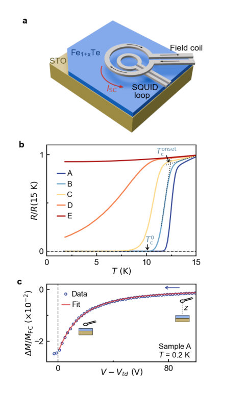
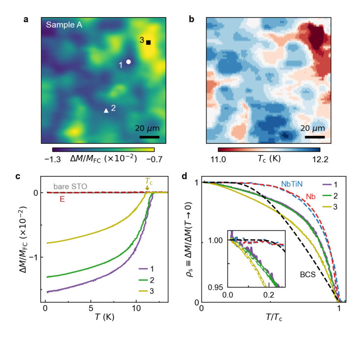
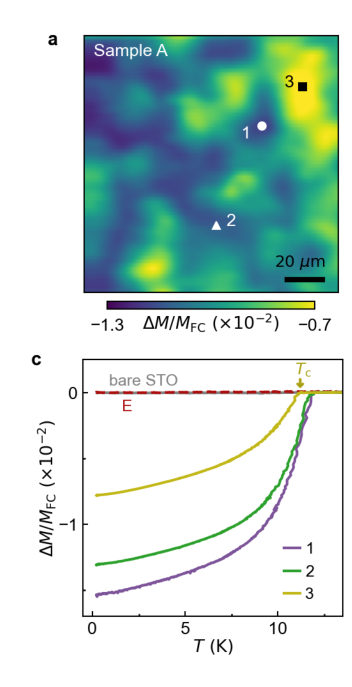
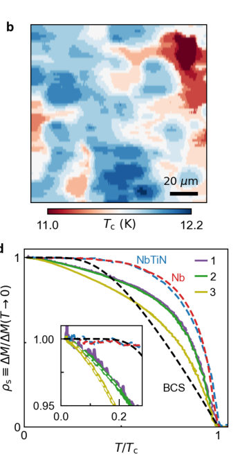
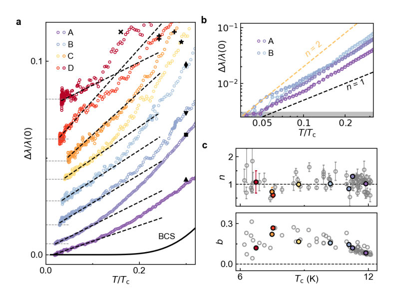
Summary. This work investigates the superconducting pairing symmetry in stoichiometric FeTe using a combination of SQUID microscopy, STM spectroscopy, and mean-field theory. Experimental results point towards a nodal superconducting state characterized by power-law temperature dependencies, which is theoretically reproduced by modeling the system with specific attractive interactions leading to nodal d-wave or nodal s-wave pairing.
Why it may be interesting. The combination of advanced experimental diagnostics (SQUID, STM) with detailed theoretical modeling of pairing symmetries in iron-based superconductors provides a rich playground for understanding unconventional pairing mechanisms beyond simple BCS theory.
Main problem. To determine the nature of the superconducting pairing state in stoichiometric FeTe and whether it deviates from the isotropic gap trend seen in intermediate Fe(Se,Te) compositions.
Main result. Experimental evidence (power-law $\lambda(T)$ and V-shaped DOS) strongly suggests a nodal superconducting state (d-wave or nodal s-wave), which is theoretically supported by mean-field calculations incorporating specific attractive interactions.
Method. The study combines multiple experimental techniques (SQUID, STM/S, transport) with theoretical modeling using mean-field calculations on an effective Hamiltonian.
Model / system. The system is stoichiometric FeTe thin films. Theoretically, it is modeled using a Hubbard-Kanamori Hamiltonian solved via mean-field theory, incorporating various attractive interactions (NN, NNN, NNNN) to stabilize different pairing symmetries.
Key observables. Superfluid stiffness ($\kappa_s$), London penetration depth ($\lambda(T)$), low-energy density of states (DOS), and the superconducting transition temperature ($T_c$).
Important parameters / regimes. The superconducting gap structure (nodal vs. fully gapped), the temperature dependence exponents ($n \approx 1.2$ for $ ho_s(T)$), and interaction parameters ($U, V_2, V_3, V_4$).
Assumptions / limitations. The SQUID measurement assumes the Pearl limit ($\lambda \gg d$), and the theoretical analysis uses mean-field approximations while preserving certain symmetries (SU(2), time-reversal).
Figures summary. Figures show spatial maps of superfluid stiffness and $T_c$ inhomogeneity, power-law fits for $ ho_s(T)$ and $\Delta\lambda/\lambda(0)$, and theoretical DOS plots comparing nodal d-wave and nodal s-wave predictions against experimental STS data.
Paper structure. The paper progresses from experimental characterization of spatial inhomogeneity and power-law temperature dependencies (SQUID/STM) to theoretical modeling using mean-field theory to reproduce the observed nodal gap signatures.
Superconductivity in stoichiometric FeTe opens access to the FeTe endpoint of the Fe(Se,Te) phase diagram, yet the nature of its superconducting pairing state remains unresolved. In this work, we combine scanning superconducting quantum interference device (SQUID) microscopy, electrical transport, scanning tunneling microscopy and spectroscopy (STM/S), and mean-field calculations to investigate the local superfluid response and pairing state of FeTe thin films with tunable stoichiometry. Even in stoichiometric FeTe, we observe micrometer-scale spatial variations in both superfluid stiffness and superconducting transition temperature $T_c$, while the London penetration depth remains non-saturating down to 0.02$T_c$ and follows a power-law temperature dependence with an exponent of approximately 1-1.5. Together with a V-shaped low-energy density of states and two-gap modeling, these results indicate a superconducting state with gap nodes or deep minima, consistent with either a $d$-wave or nodal $s$-wave superconducting state. Our findings establish stoichiometric FeTe as a distinct superconducting regime that departs from the trend toward more isotropic gaps at intermediate Se/Te compositions, providing a new benchmark for modern microscopic theories of iron-chalcogenide superconductivity. Our work also reveals a crossover from weak to rapid suppression of $T_c$ as superfluid stiffness decreases, connecting FeTe to the broader phenomenology observed in unconventional superconductors.
Authors: Liqi Chen, Ziyang Wang, Donghao Li, Jingye Wang, Ning Zhao, Jun Zhou, Jie Zhu, Dawei Tang
Type: both · Category: other · PDF: https://arxiv.org/pdf/2609.08734v1
Analysis basis: full PDF text, analyzed in chunks
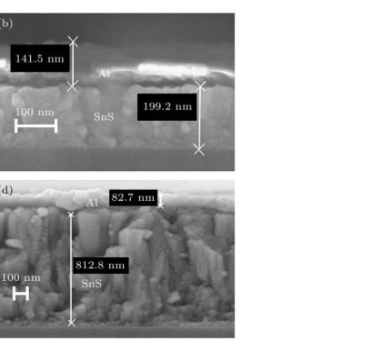
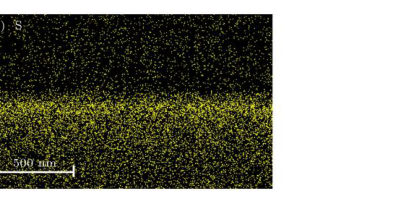
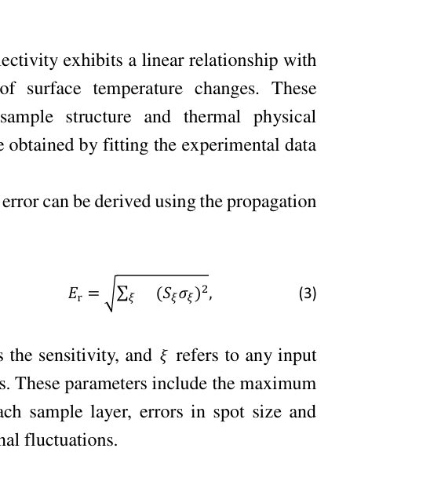
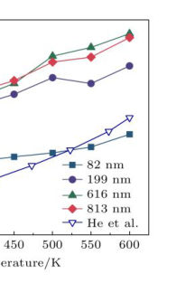
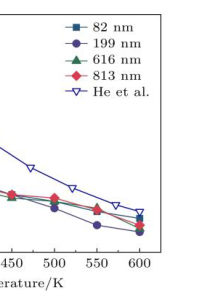
Summary. This work experimentally and theoretically investigates how reducing the dimensions of SnS into nanofilms improves its thermoelectric efficiency. By measuring key parameters like Seebeck coefficient, conductivity, and thermal conductivity across varying thicknesses and temperatures, the authors demonstrate that quantum confinement and phonon scattering enhance the figure of merit (ZT). This establishes a framework for designing high-performance, eco-friendly thermoelectric materials.
Why it may be interesting. While focused on solid-state materials, the study's detailed analysis of transport mechanisms (phonon scattering, energy filtering) provides excellent case studies for understanding how dimensionality and interfaces modify bulk material properties, which is relevant to nanoscale quantum transport.
Main problem. The study aims to enhance the thermoelectric performance of SnS by investigating how its properties change when engineered into thin films, specifically by varying thickness and temperature.
Main result. Low-dimensionalization significantly boosts the thermoelectric figure of merit (ZT) compared to bulk SnS, primarily by enhancing the Seebeck coefficient and drastically reducing thermal conductivity.
Method. The research combines experimental measurements using Time-Domain Thermoreflectance (TDTR) and specialized thin-film parameter test systems (ZEM-3) with theoretical analysis of transport mechanisms.
Model / system. The physical system is SnS semiconductor material, tested in the form of nanofilms with thicknesses ranging from 82 nm to 813 nm, studied across a temperature range of 300–600 K.
Key observables. Thermoelectric figure of merit (ZT), Seebeck coefficient (S), electrical conductivity (σ), thermal conductivity (κ), and Power Factor (PF).
Important parameters / regimes. Film thickness (e.g., 82 nm, 199 nm, 616 nm, 813 nm), Temperature (300–600 K), and the resulting quantum confinement/energy filtering effects.
Assumptions / limitations. The enhancement in thermoelectric performance is attributed to the interplay between quantum confinement, energy filtering, and intensified phonon scattering mechanisms.
Figures summary. Figures show the thickness dependence of SEM images, temperature dependence of S and $\sigma$ for various thicknesses, and the resulting temperature dependence of $\kappa$ and $ZT$ for different film thicknesses.
Paper structure. The paper systematically measures and analyzes the temperature and thickness dependence of S, $\sigma$, and $\kappa$ to calculate ZT, demonstrating that low-dimensional effects enhance ZT by decoupling thermal and electrical transport.
SnS as an environmentally friendly, cost-effective, and earth-abundant narrow-bandgap semiconductor material, has demonstrated significant application potential in the field of medium-temperature thermoelectric conversion. However, the thermoelectric performance of its bulk counterpart is inherently constrained by intrinsic point defects (e.g., vacancies) and the material's specific band structure. Low-dimensional engineering has emerged as a pivotal strategy for overcoming these limitations and enhancing thermoelectric performance. In this work, we systematically investigate the thermoelectric properties of SnS nanofilms with distinct thicknesses (82 nm, 199 nm, 616 nm, and 813 nm) across a temperature range of 300-600 K. Measurements were conducted using time-domain thermoreflectance (TDTR) and a dedicated thin-film thermoelectric parameter test system (ZEM-3). Our results confirm that low-dimensionalization effectively boosts the thermoelectric performance of SnS, with the thermoelectric figure of merit (ZT) displaying a pronounced dependence on both film thickness and temperature. All four SnS thin films exhibit thermoelectric performance that is markedly superior to that of bulk SnS. This enhancement is primarily attributed to the quantum confinement effect, energy filtering effect, and intensified phonon scattering, all of which are induced by the low-dimensional structural characteristics. This work provides not only experimental evidence and theoretical insights for the performance optimization of SnS nanofilms but also establishes a foundational framework for the development of high-efficiency, eco-friendly medium-temperature thermoelectric materials, thereby holding significant scientific value and practical implications.
Authors: Ruben Asanovski, Anabela Veloso, Ben Kaczer, Naoto Horiguchi, Jacopo Franco
Type: experiment · Category: other · PDF: https://arxiv.org/pdf/2609.08674v1
Analysis basis: full PDF text, analyzed in chunks
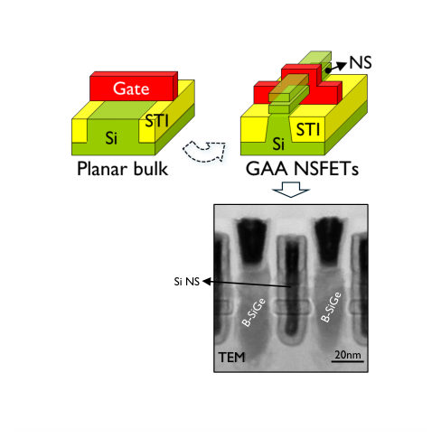
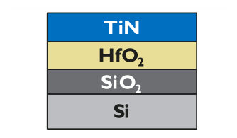
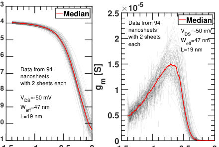
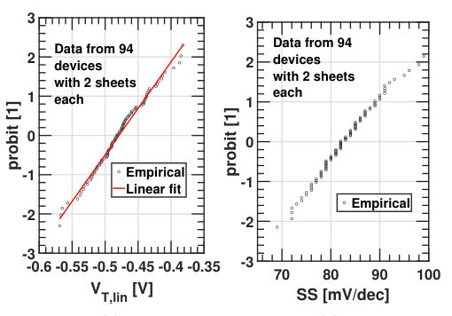
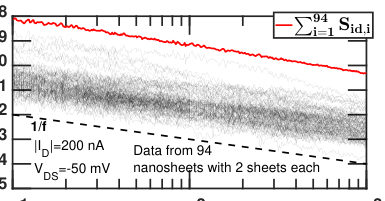
Summary. This paper conducts a wafer-level study comparing 1/f noise in GAA nanosheet and planar HKMG transistors. By extracting the effective trap density from noise measurements, the authors demonstrate that the noise performance is governed by the gate stack quality, not the transition to the GAA nanosheet architecture. This suggests that gate stack optimization strategies applicable to planar devices will also benefit nanosheet transistors.
Why it may be interesting. Not directly relevant
Main problem. To assess the impact of transitioning from planar High-kappa Metal Gate (HKMG) transistors to scaled Gate-All-Around (GAA) p-type nanosheet transistors on device reliability, specifically concerning 1/f noise.
Main result. The effective trap density extracted from 1/f noise is comparable between planar and nanosheet architectures, indicating that gate stack quality, not channel geometry, governs the noise response.
Method. Wafer-level 1/f noise characterization and statistical analysis of transistor performance across multiple devices.
Model / system. The study compares scaled p-type GAA nanosheet transistors against large-area planar HKMG pMOSFETs, using identical gate stacks and processing conditions for comparison.
Key observables. 1/f noise spectrum (S_vg), effective trap density (N_BT), Threshold voltage (V_T) and Subthreshold Swing (SS) CDFs.
Important parameters / regimes. Gate voltage overdrive (V_ov), operating temperature (25°C), and the comparison between planar and nanosheet geometries.
Assumptions / limitations. The analysis assumes that the noise behavior is primarily dictated by the quality of the gate stack dielectric, regardless of the channel architecture.
Figures summary. Figures compare the effective trap density (Fig. 11) and show consistent noise power spectral densities and device uniformity metrics between the two architectures.
Paper structure. The paper systematically characterizes the 1/f noise in both device types, extracts the effective trap density using established formulas, and then compares these quantitative results to argue that gate stack quality is the limiting factor for noise performance.
We present a comprehensive wafer-level 1/f noise study of scaled Gate-All-Around (GAA) p-type nanosheet transistors and benchmark them against large-area planar High- \k{appa} Metal Gate (HKMG) devices to assess the impact of device architecture on reliability. By statistically analyzing noise data from 188 nanosheets, we extract the effective trap density in the dielectric and compare it to that of planar transistors with identical gate stack, comparable processing thermal budgets, and no specific reliability anneals. The effective trap density extracted from 1/f noise is comparable in planar and nanosheet architectures. This indicates that transitioning to GAA nanosheets does not increase noise, which remains governed by gate stack quality.